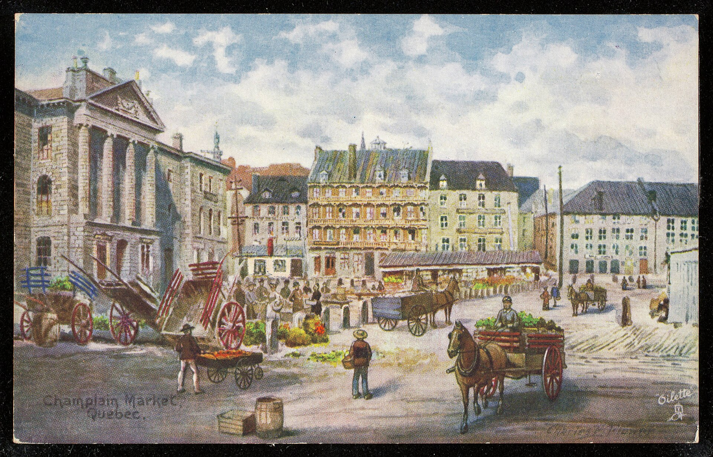
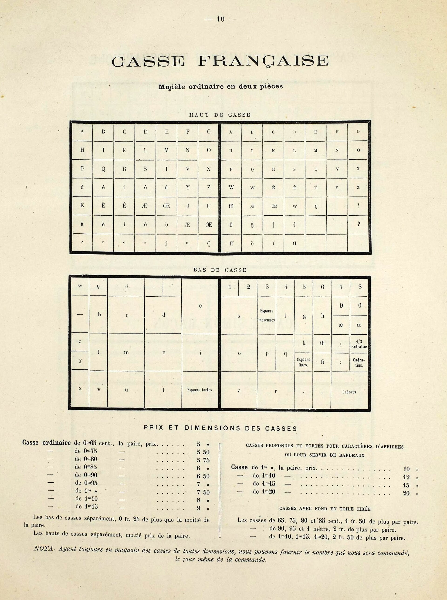

Who knowsQui parleQuébécois?québécois ?
We tested 101 AI models on 23 French tests. Here is who understands Quebec.Nous avons testé 101 modèles d’IA sur 23 tests en français. Voici lesquels comprennent le Québec.
Look up a modelConsulter un modèle
JourneyParcours
Four steps, one pathQuatre étapes, un seul chemin
Start from one model, then widen. The model you pick follows you from step to step.Partez d’un modèle, puis élargissez. Le modèle choisi vous suit d’une étape à l’autre.
Model sheetFiche d’un modèle
Look up one model: its rank and where it is strong.Consulter un modèle : son rang et ses points forts.
Compare modelsComparer des modèles
Put 2 to 6 models side by side, skill by skill.Placer de 2 à 6 modèles côte à côte, compétence par compétence.
All resultsTous les résultats
Sort and filter the full table of 101 models and 23 tests.Trier et filtrer le tableau complet des 101 modèles et des 23 tests.
ExploreExplorer
Visual tools: Quebec against other French tests, heatmap, size against score, a quiz.Outils visuels : Québec contre autres tests en français, carte de chaleur, taille contre score, quiz.

One study, three formatsUne étude, trois formats
Pick the format that fits how you read.Choisissez le format qui convient à votre façon de lire.
The posterL’affiche
For everyonePour tout le monde
The essentials on one page: one question, one plain answer, six bars on one skill.L’essentiel en une page : une question, une réponse simple, six barres sur une compétence.
The data sheetLa fiche de données
For people who must choosePour celles et ceux qui doivent choisir
Pick 2 to 6 models and compare them on seven skills, as a radar plate and a table.Choisissez de 2 à 6 modèles et comparez-les sur sept compétences, en radar et en tableau.
The articleL’article
For researchersPour la recherche
The accepted paper, the protocol, the 23 tasks and every score to two decimals.L’article accepté, le protocole, les 23 tâches et chaque score à deux décimales.
Quebec expressions, model by modelLes expressions québécoises, modèle par modèle
Six models on the two Quebec tests. Guessing at random scores 11.1.Six modèles sur les deux tests québécois. Le hasard obtient 11,1.
Correct answers (%)Réponses justes (%)
Compare models, 2 to 6 at a timeComparer des modèles, de 2 à 6 à la fois

Seven skills, in plain wordsSept compétences, en mots simples
Feelings in textSentiments dans un texte
Does the model tell a happy review from an angry one?Le modèle distingue-t-il un avis content d'un avis fâché ?
2 tests2 tests
ReasoningRaisonnement
Given one sentence, does another one follow, contradict it or say something unrelated?Une phrase en entraîne-t-elle une autre, la contredit-elle ou n'a-t-elle aucun lien ?
8 tests8 tests
Answering questionsRépondre aux questions
Can it find the answer in a passage, or say yes or no to a question?Trouve-t-il la réponse dans un texte, ou répond-il par oui ou non à une question ?
3 tests3 tests
GrammarGrammaire
Can it spot the sentence that is written correctly?Repère-t-il la phrase bien écrite ?
3 tests3 tests
Meaning of words and sentencesSens des mots et des phrases
Does it see that two sentences say the same thing, and which sense of a word is meant?Voit-il que deux phrases disent la même chose, et quel sens d'un mot est visé ?
3 tests3 tests
Who is "he" or "she"?Qui est « il » ou « elle » ?
Can it work out which person or thing a pronoun points to?Sait-il à quelle personne ou chose renvoie un pronom ?
2 tests2 tests
Quebec FrenchFrançais québécois
Does it know Quebec expressions and words?Connaît-il les expressions et les mots du Québec ?
2 tests2 tests
What this snapshot holdsCe que contient cet instantané
Scores follow the protocol of the COLE paper, taken from colebenchmark.org. Newer models are not in yet, for example Claude Sonnet 4.5, GPT-5.1 and Gemini 3 Pro.Les scores suivent le protocole de l’article COLE, repris de colebenchmark.org. Les modèles plus récents n’y sont pas encore, par exemple Claude Sonnet 4.5, GPT-5.1 et Gemini 3 Pro.
A test a model did not take is left empty, never counted as zero. Planned next: a second protocol that re-runs every model, with these entries kept as an archive.Un test que le modèle n’a pas passé reste vide, jamais compté comme zéro. Prévu ensuite : un second protocole qui réévalue chaque modèle, ces entrées restant en archive.
Is your model missing?Il manque votre modèle ?
Ask for an evaluation with the contact button. No delay is promised.Demandez une évaluation avec le bouton de contact. Aucun délai n’est promis.